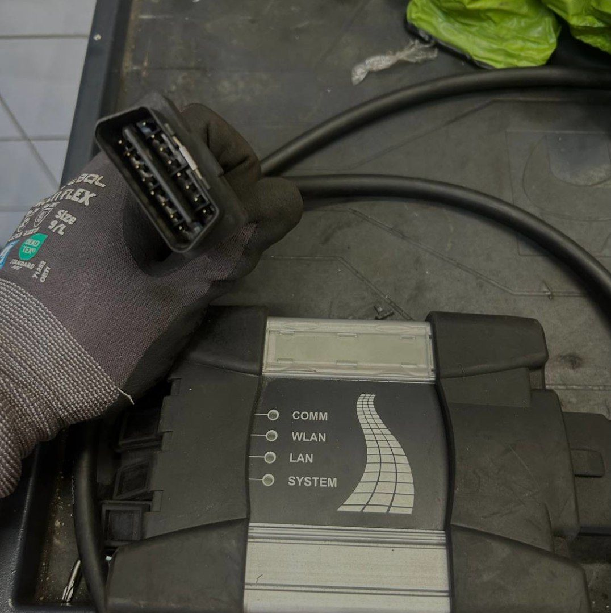

Home / Diagnostics
BMW OBD Port Location: Where It Is and What It's For
Quick answer
On the BMWs I work with, the OBD port is under the dashboard on the driver's side, near the pedals. Some cars have a small protective plastic cover over it, and some have none. A basic reader can read fault codes, but jobs such as battery registration need a tool with BMW functions.

Where the OBD port is
Look under the dashboard on the driver's side, near the pedals. The photo shows a plug connected to the port.
The protective cover
Some BMWs have a small protective plastic cover over the port, and some don't. If yours has one, open or remove it gently, and don't force it.
What the port is used for
- Reading fault codes when a warning light comes on
- Looking at live data from the car
- Service functions, such as registering a new battery. See BMW Battery Registration
- Coding and other work done with BMW-specific tools
Basic reader or BMW tool
A basic reader that only reads fault codes is fine for a quick look. For service functions you need a tool with BMW-specific functions. The photo shows the connector and the diagnostic interface we use at work.

Tips
- Connect the plug firmly and follow your tool's instructions about the ignition
- Don't leave a cheap adapter plugged in for long periods. Some keep drawing power
- If a code comes up, write it down before you clear it
FAQ
Where is the OBD port on a BMW?
Under the dashboard on the driver's side, near the pedals, on the cars I work with.
Does my BMW have a cover over the OBD port?
Some do and some don't. If there is one, open it gently.
Can any scanner read a BMW?
A basic reader can read fault codes. Service functions such as battery registration need a tool with BMW functions.
Should I leave an OBD adapter plugged in?
I wouldn't for long. Some adapters keep drawing power and can drain the battery.
What can I do with the OBD port besides reading codes?
Look at live data, and with the right tool, run service functions and coding.
This guide is general information based on personal experience, not professional advice. Check your own car's manual for exact specs and read the disclaimer before starting any job.